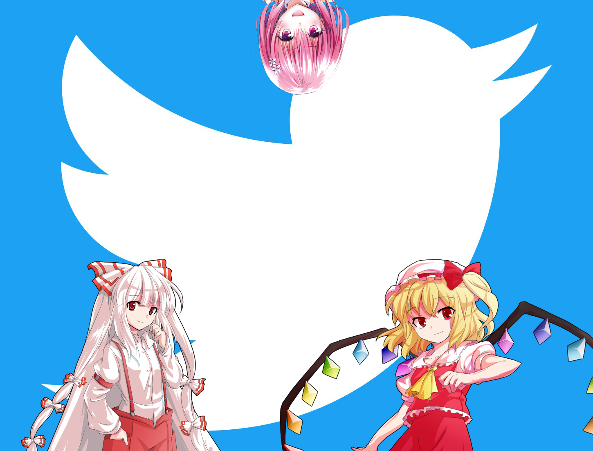
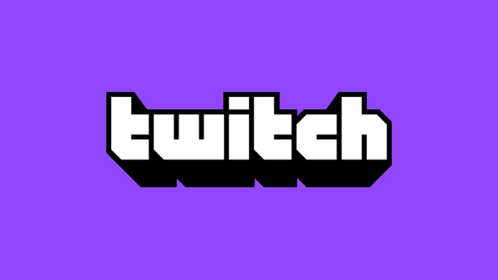

Contact
YouTube
Vous me trouverez sur youtube en train de poster majoritairement des tests sur des jeux pas très connus, je ferai aussi des reviews d'anime ou autre par moment

J'ai aussi un compte twitter, où je poste n'importe quoi, mais c'est pas grave j'aime bien être un peu idiot ça me cultive ^^

Twitch
J'ai aussi une chaîne twitch où je streame assez réguilérement, c'est une passion plutôt récente que je me suis découvert qui j'espère durera un certain moment car c'est quelque chose qui me plaît beaucoup. Je ne part évidemment pas dans l'optique d'en vivre car ce serait complétement immature et irresponsable.